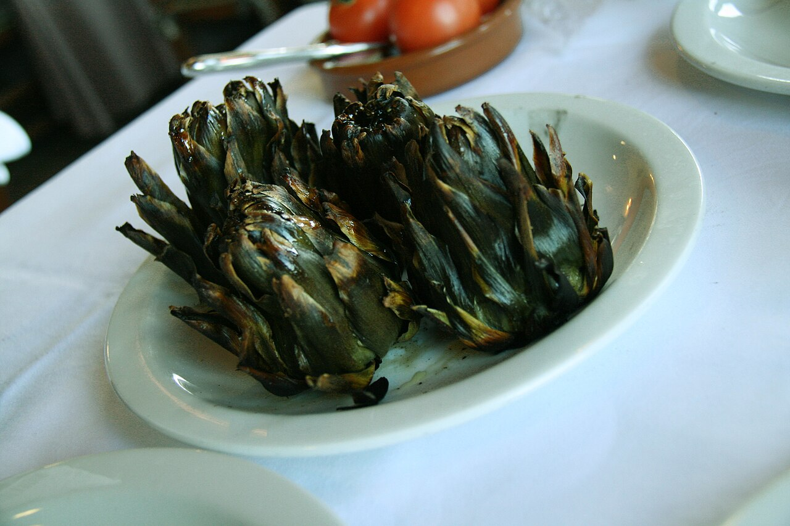
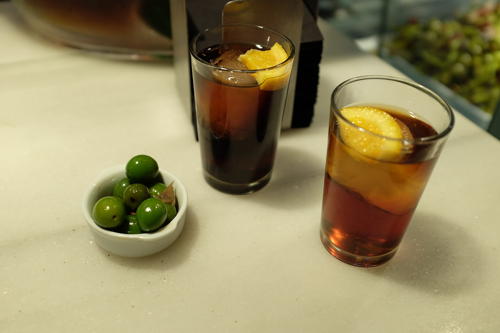
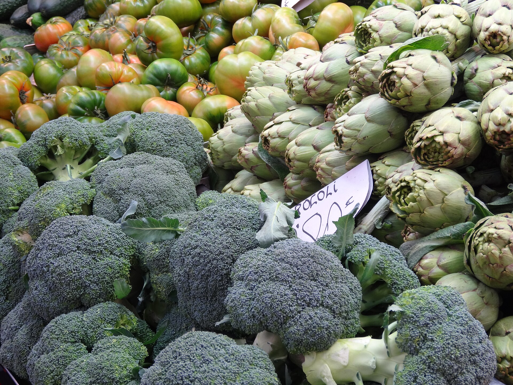

Por su hijaLa Nina
Alcachofas de temporada guisadas despacio, con un fondo que Ángel no comparte con nadie. La preferida de la casa cuando el mercado trae buena verdura.
Ángel abrió la persiana hace años y desde entonces cocina como en casa: lo que trae el mercado, con el nombre de los suyos en la pizarra. La Nina, el Montxo, la Paca — no son platos, son personas.

Ángel compra cada mañana en el mercado de l'Abaceria. Se cocina lo que hay, no lo que sobra.
Barra y taburetes, sin pretensiones. Reserva o pásate pronto, se llena rápido.
Metro Alfons X, a pie de calle en el corazón de Gràcia. Sin cadenas, sin turismo de postal.
“La Nina la hace mi hija, el Montxo por mi cuñado, y la Paca con mucho amor.” — Reseña de un cliente sobre Ángel
Ángel lleva La Barreta como quien lleva su propia cocina: con la puerta abierta y la nevera llena de lo que ha comprado esa misma mañana. No hay menú plastificado ni fotos de los platos. Hay una pizarra, letra apretada, y nombres que solo tienen sentido si conoces a la familia.
Cada plato que sale de la barra lleva el nombre de alguien: una hija, un cuñado, una madre. No es un gesto de marketing — es, sencillamente, cómo Ángel ha llamado siempre a las cosas en su casa. Los clientes lo notan enseguida en las reseñas: se habla de los platos como se habla de la gente, con cariño.
El resultado es un bar de barrio sin impostura, donde el vermut se sirve de grifo, los bocadillos no caben en dos manos, y cada mesa —o cada taburete, porque aquí no hay mesas para sentarse— comparte algo del mismo mercado y de la misma cocina de siempre.
No hay proveedor de congelados ni carta impresa a cinco años vista. Cada mañana Ángel camina hasta el mercado de l'Abaceria y decide el día según lo que encuentra: alcachofas, encurtidos, la verdura que está en su punto.
Es un método antiguo — casi terco — en una ciudad que cada vez tiene menos bares así. Pero es la razón por la que un bocadillo aquí sabe distinto: nada lleva más de un día en la nevera.

Carrer de Pi i Margall, 77
08024 Gràcia, Barcelona
L4 — Alfons X, a pie de calle
* Horario orientativo de un bar de barrio pequeño — puede variar según el día. Mejor confirmar por teléfono antes de venir.
Solo 20 sitios, sin mesas para sentarse — así que si vienes en grupo o quieres asegurar taburete, una llamada lo arregla todo.